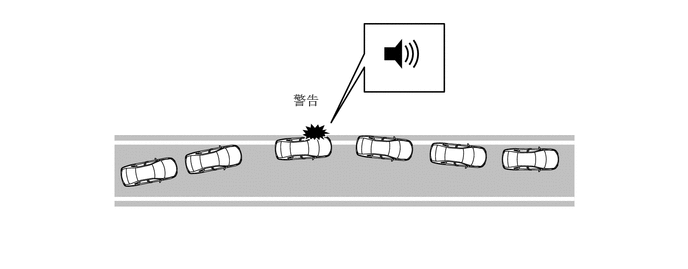
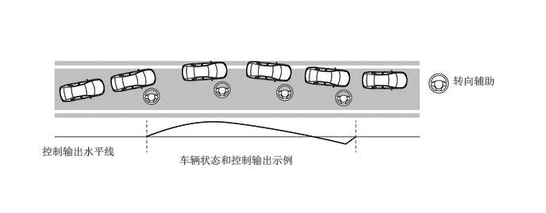
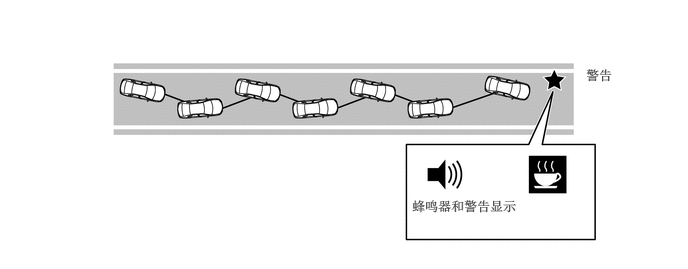
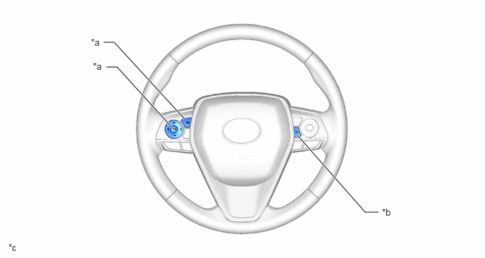

主要零部件的功能
| 零部件 | 功能 | |
|---|---|---|
|
*1：汽油车型 *2：HV 车型 |
||
| 前向识别摄像机 | ·
拍摄车辆前方的道路视野，检测行驶车道上的车道标识，并计算至车道中央的半径、车道宽度、距标识的距离和前进方向偏离。 ·
控制 LDA 系统。 ·
将指示灯点亮请求信号、多信息显示屏指示请求信号和蜂鸣器鸣响请求信号传输至组合仪表总成。 ·
接收车辆信息和转向信号灯工作信号并将转向力信号发送至动力转向 ECU。 |
|
| 摄像机加热器（带加热器的前向识别罩分总成） | 摄像机加热器根据来自前向识别摄像机的信号进行加热。 | |
| 毫米波雷达传感器总成 | 向前发射毫米波，利用反射波检测前方有无行驶车辆，然后将此信息传输给前向识别摄像机。 | |
| 行驶辅助 ECU 总成 | 将车道偏离主开关信号传输至前向识别摄像机。 | |
| 方向盘装饰盖开关总成 | 车道偏离警示主开关（LDA 主开关） | 检测系统的开启/关闭状态并将信号传输至行驶辅助 ECU 总成。 |
| 仪表控制开关 | 改变车道偏离警示功能、转向辅助功能和车辆摇摆警告功能的定制设定。 | |
| 空气囊 ECU 总成 | 横摆率传感器 | 检测横摆率并将信号传输至前向识别摄像机。 |
| 转向传感器 | 检测转向角度和方向并将信号传输至前向识别摄像机。 | |
| 制动执行器总成*1 | 防滑控制 ECU | 将来自转速传感器的车速信号发送至前向识别摄像机。 |
| 带主缸的制动助力器总成*2 | ||
| ECM*1 | ·
将加速踏板开度信号发送至前向识别摄像机。 ·
将换档杆位置信号发送至前向识别摄像机。 |
|
| 混合动力车辆控制 ECU*2 | ||
| 组合仪表总成 | 将转向信号指令传输至前向识别摄像机。 | |
| 组合仪表总成 | 车道偏离警示指示灯（LDA 指示灯） | LDA 指示灯根据来自前向识别摄像机的信号点亮或熄灭。 |
| 多信息显示屏 | 根据来自前向识别摄像机的信号显示警告信息和白色线条，以通知或警告驾驶员系统的状况。 | |
| 主警告灯 | 根据来自前向识别摄像机的信号点亮以警告驾驶员。 | |
| 蜂鸣器 | 根据来自前向识别摄像机的信号鸣响以警告驾驶员。 | |
| 转向信号开关 | 将转向信号指令传输至组合仪表总成。 | |
| 齿轮齿条式动力转向机总成 | 动力转向 ECU | ·
根据来自前向识别摄像机的信号控制动力转向电动机总成。 ·
将来自扭矩传感器的转向扭矩信号发送至动力转向 ECU。 ·
检测驾驶员进行的转向操作并将其输出至前向识别摄像机。 ·
接收到来自前向识别摄像机的异常扭矩请求信号时取消转向辅助。 |
| 主车身 ECU（多路网络车身 ECU） | 将国家规范信息信号发送至前向识别摄像机。 | |
| 仪表反射镜分总成*2 | 抬头显示装置接收来自组合仪表总成的信号以显示系统状态。 | |
| 中央网关 ECU（网络网关 ECU） | CAN 通信的网关功能。 | |
工作条件
LDA 系统（车道偏离警示功能）的工作条件
| 操作 | 条件 |
|---|---|
|
*1：汽油车型 *2：HV 车型 |
|
| 工作 | 满足以下所有条件时，车道偏离警示系统（车道偏离警示功能）激活：
·
车道偏离警示主开关打开。（按下车道偏离警示主开关打开车道偏离警示系统时，车道偏离警示指示灯点亮）。 ·
车速高于约 50 km/h (32 mph)。 ·
检测到车道标识。 ·
将转向信号设定至与前行方向相反的方向时，车道偏离警示系统激活。 ·
未检测到系统故障。 |
| 中止 | 满足以下任一条件时，车道偏离警示系统（车道偏离警示功能）中止：
·
车速约低于 50 km/h (32 mph)。 ·
检测到转向信号指令。 ·
未检测到车道标识。 ·
激活车道偏离警示后不久。 ·
检测到车道偏离警示系统故障。 ·
前向识别摄像机的温度异常。 ·
车辆穿过车道标识一半或更多。 |
| 取消/恢复 | 满足以下任一条件时，车道偏离警示系统（车道偏离警示功能）停止：
·
车道偏离警示主开关关闭。 ·
车道偏离警示系统故障。 ·
发动机开关*1 或电源开关*2 关闭。 满足以下条件时，车道偏离警示系统（车道偏离警示功能）恢复： ·
满足以上所列的开始工作的条件。 ·
车道偏离警示系统状态恢复至正常。 ·
由于系统故障停止车道偏离警示系统后，将发动机开关*1 或电源开关*2 置于 OFF 位置然后再次置于 ON (IG) 位置以确保正常工作。 |
车道偏离警示系统的工作条件（转向辅助功能）
| 操作 | 条件 |
|---|---|
|
*1：汽油车型 *2：HV 车型 |
|
| 工作 | 满足以下所有条件时，车道偏离警示系统（转向辅助功能）激活：
·
车道偏离警示主开关打开。（按下车道偏离警示主开关打开车道偏离警示系统时，车道偏离警示指示灯点亮）。 ·
车速高于约 50 km/h (32 mph)。 ·
检测到车道标识。 ·
未检测到转向信号指令。 ·
未检测到系统故障。 ·
通过操作方向盘装饰盖开关总成选择转向辅助 ON。 ·
未检测到减速度等于定速或大于定速。 ·
未进行转向操作以改变车辆行驶方向。 ·
车辆安全相关系统（例如 VSC 和碰撞预测系统）不工作。 ·
未检测到通过加速踏板操作进行的加速。 |
| 中止 | 满足以下任一条件时，车道偏离警示系统（转向辅助功能）中止：
·
车速约低于 50 km/h (32 mph)。 ·
检测到转向信号指令。 ·
未检测到车道标识。 ·
激活车道偏离警示后不久。 ·
检测到车道偏离警示系统故障。 ·
横摆率传感器（空气囊 ECU 总成）故障。 ·
减速度传感器或转向传感器故障。 ·
车辆穿过车道标识一半或更多。 ·
检测到产生的转向辅助改变车辆行驶方向。 ·
检测到减速度等于定速或大于定速。 ·
车辆安全相关系统（例如 VSC 和碰撞预测系统）工作。 ·
检测到通过加速踏板操作进行的加速。 ·
前向识别摄像机的温度异常。 ·
未检测到方向盘操作。 |
| 取消/恢复 | 满足以下任一条件时，车道偏离警示系统（转向辅助功能）停止：
·
车道偏离警示主开关关闭。 ·
车道偏离警示系统故障。 ·
发动机开关*1 或电源开关*2 关闭。 ·
通过操作方向盘装饰盖开关总成选择转向辅助 OFF。 满足以下条件时，车道偏离警示系统（转向辅助功能）恢复： ·
满足以上所列的开始工作的条件。 ·
车道偏离警示系统状态恢复至正常。 ·
由于系统故障停止车道偏离警示系统后，将发动机开关*1 或电源开关*2 置于 OFF 位置然后再次置于 ON (IG) 位置以确保正常工作。 ·
通过操作仪表控制开关选择转向辅助 ON。 |
车道偏离警示系统的工作条件（车辆摇摆警告功能）
| 操作 | 条件 |
|---|---|
|
*1：汽油车型 *2：HV 车型 |
|
| 工作 | 满足以下所有条件时，车道偏离警示系统（车辆摇摆警告功能）激活：
·
车速高于约 50 km/h (32 mph)。 ·
检测到车道标识。 ·
未检测到系统故障。 ·
通过操作方向盘装饰盖开关总成选择车辆摇摆警告 ON。 |
| 中止 | 满足以下任一条件时，车道偏离警示系统（车辆摇摆警告功能）中止：
·
车速约低于 50 km/h (32 mph)。 ·
检测到转向信号指令。 ·
未检测到车道标识。 ·
激活车道偏离警示后不久。 |
| 取消/恢复 | 满足以下任一条件时，车道偏离警示系统（车辆摇摆警告功能）停止：
·
车道偏离警示系统故障。 ·
发动机开关*1 或电源开关*2 关闭。 ·
通过操作方向盘装饰盖开关总成选择车辆摇摆警告 OFF。 满足以下条件时，车道偏离警示系统（车辆摇摆警告功能）恢复： ·
满足以上所列的开始工作的条件。 ·
车道偏离警示系统状态恢复至正常。 ·
由于系统故障停止车道偏离警示系统后，将发动机开关*1 或电源开关*2 置于 OFF 位置然后再次置于 ON (IG) 位置以确保正常工作。 ·
通过操作方向盘装饰盖开关总成选择车辆摇摆警告 ON。 |
系统控制
功能概述
车道偏离警示功能
如果系统判定车辆可能偏离所在的车道，则系统点亮组合仪表显示屏中的指示灯并鸣响蜂鸣器，以使驾驶员采取措施避免车道偏离。

转向辅助功能
如果系统判定车辆可能偏离所在的车道，则系统进行转向辅助以帮助驾驶员纠正车道。如果驾驶员未采取正确措施，则系统鸣响蜂鸣器。

车辆摇摆警告功能
系统根据车道内车辆的位置和驾驶员的转向输入，检测车辆在其车道内的偏移（经常因驾驶员疲劳、注意力不集中或未向前看时出现），并在发生车道偏离或碰撞前警告驾驶员。

功能
可使用方向盘装饰盖开关总成的仪表控制开关，定制转向辅助功能和车辆摇摆警告功能。

| *a | 仪表控制开关 | *b | 车道偏离警示主开关 |
| *c | 此插图为示例。 | - | - |
定制车道偏离警示系统设定功能
| 项目（使用仪表控制开关的上/下按钮选择） | 描述 | 设定（使用仪表控制开关的中央按钮进行更改） |
|---|---|---|
| 转向辅助 | 选择打开/关闭方向盘助力 | ·
ON ·
OFF |
| 警告灵敏度 | 车道偏离警示时间 | ·
Standard ·
High |
定制车辆摇摆警告功能
| 项目（使用仪表控制开关的上/下按钮选择） | 描述 | 设定（使用仪表控制开关的中央按钮进行更改） |
|---|---|---|
| 车辆摇摆警告 | 选择开启/关闭摇摆警告功能。 | ·
ON ·
OFF |
| 车辆摇摆检测灵敏度 | 摇摆警告时间 | ·
High ·
Standard ·
Low |
诊断
考虑到维修便利性，采用诊断功能以便更易于执行系统检查。可通过连接 Global TechStream (GTS) 读取故障部位的 DTC。有关详情，请参考修理手册。